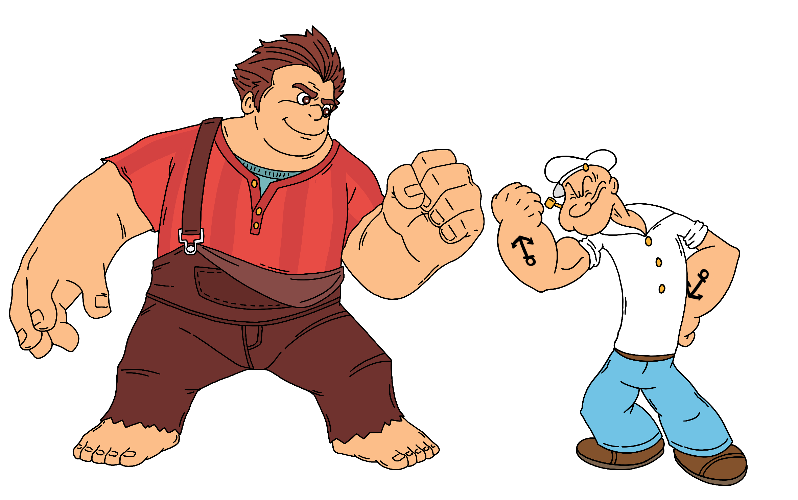
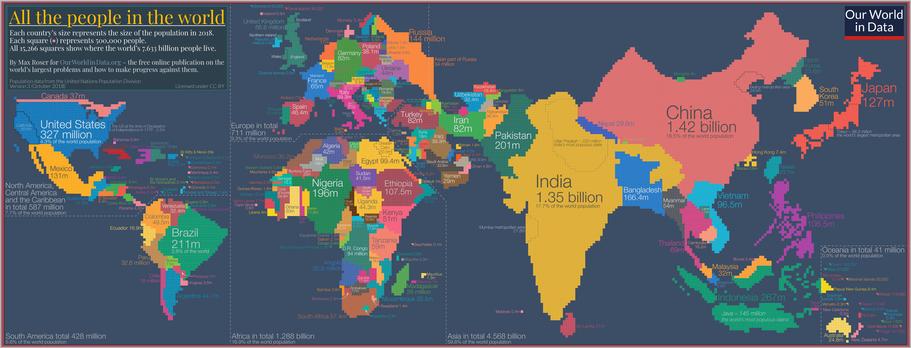
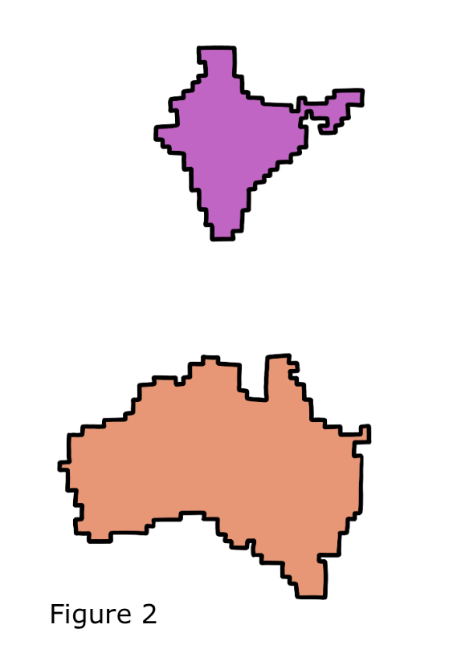
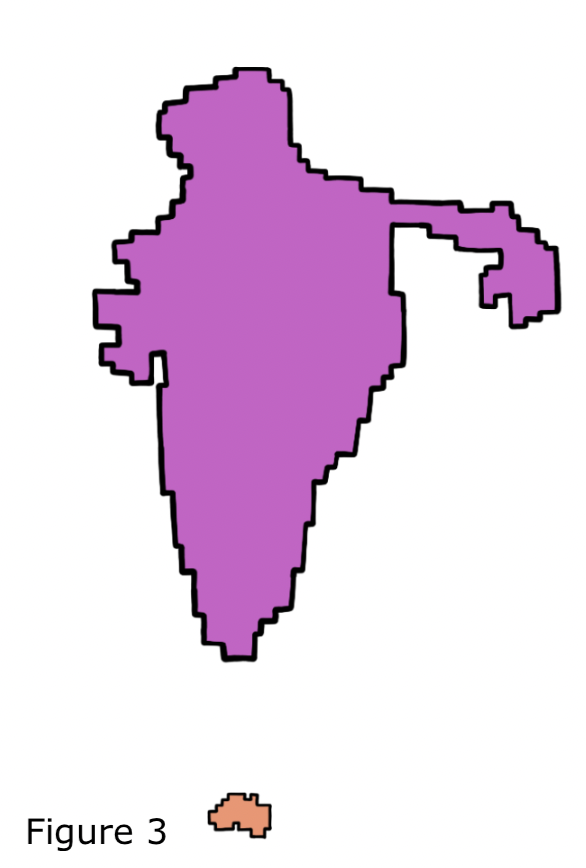
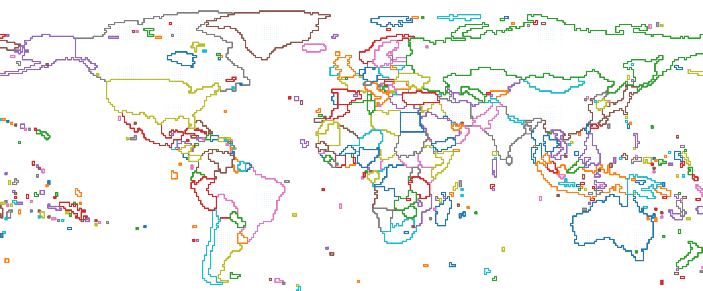
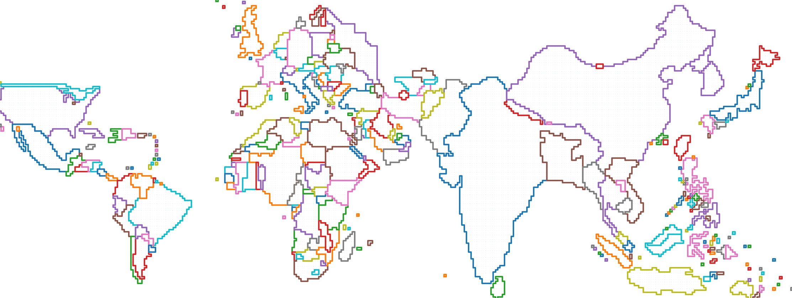
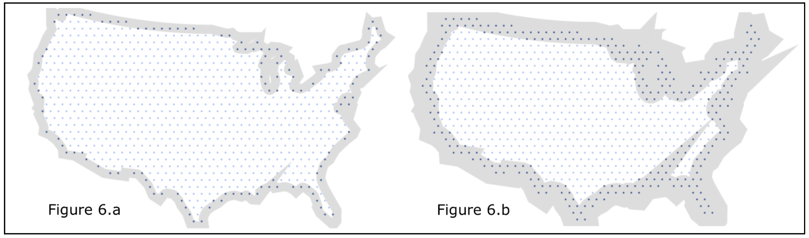
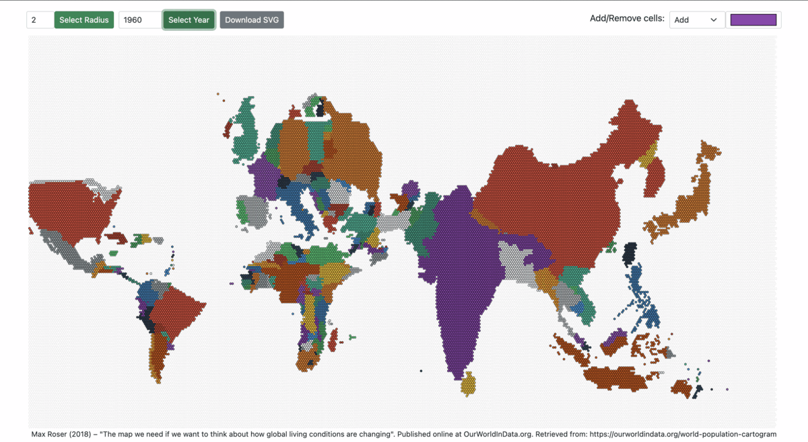

Google Summer of Code - Cartograms in Grapher
·
Code on the Road·
#Python
#Cartogram
#GSoC
#Open Source 9 min read
9 min read

Wish me Luck :)
Update: I got the gig 😋
A proposal I submitted for Google Summer of Code, Summer 2022 to Our World in Data (OWID) to implement a population-scaled, shape preserved world cartogram.
1. Overview
Our World in Data (OWID) strives to make knowledge of global problems accessible and understandable through interactive geographical data visualizations to see how the world has changed over the course of time.
A quick and intuitive view of the world map in relation to population makes it easy for viewers to co-relate the effect and the relative measure’s gravity. OWID uses a range of choropleth maps, but size-scaled maps have downsides, primarily because human visual perception associates areas with importance. Furthermore, readily available alternatives use mosaic cartograms, which distort the shape of countries.
The basic idea is distorting the map by resizing the regions by population since the population is among the most important aspects to consider; for example, if malnutrition is high in a vast country, then the severity is much worse than if malnutrition is high in a tiny country.

Figure 1, a population-based cartogram, shows how a cartogram can give a different impression of the world population compared with the original map.
2. Problem description
In a sentence, the primary objective is to plot a visually conclusive world map by illustrating territories using a method for trading off shape and area.
Furthermore, it’s vital to ensure the shape or the outline of a region (Example: Country and Province) is preserved, i.e., visualization steps have to be in place so that the resulting cartograms appear similar to the original world cartograms, such that the area is easily recognizable only by its appearance without the explicit need for labels and quickly understand the displayed data.
Therefore, the problem definition comes down to [2]:
- Shape Preservation: Rescaling the territories by a factor without changing the shape is nearly impossible; hence the solution bridges the gap between an ideal solution and the expected outcome.
- Topology Preservation: Emphasizing the importance for the algorithm to provide a mapping to the original polygon set, without which solving for graph isomorphism is challenging.
3. Implementation
The project primarily consists of 3 components:
- Data Retrieval and Transformation
- Core Service
- Output and Visualization
Before working on the individual components, the first and foremost step is the contract definition (Low-Level Design), considering the most prominent use-cases; the first step is to finalize the inputs, structure of the dataset, interfaces, DTOs, and DAOs.
3.1. Data Retrieval and Transformation
Data source:
- File system: CSV or TSV.
- Database: MySQL.
- API: Pythonic API for working with OWID’s data catalog; Reference.
Irrespective of the data source, the resulting in-memory list or an iterator (for large datasets) is the input for the transformation layer, responsible for standardizing the input to the core service; this ensures that changes in the input are ideally independent of the core functionalities.
3.2. Core Service
3.2.1. Input/Output
- Abstract: takes population dataset after data transformation as the input and generates an output to plot a world map in the relative scale.
- Input Parameters:
- The population dataset.
- Number of cells (squares or Hexagons) in the cartogram (Default: 20000, an approximate number for a visually acute world map for a cell density of 0.5 million).
- Initial border of the world map (Default: Size/Area scaled cartogram).
- Output:
- Final border of the world map.
- Mapping of cells within the above border for each territory/country.
- Output format: CSV or Json.
3.2.2. Gist of the Algorithm
- Taking an example, let’s say there are 20000 square (1x1) cells in a size-scaled world map, where each country has a specific number of cells representing the total area.
- Now, taking population as the measure instead of size changes the number of cells for every country (total number of cells remains to be 20000).
- To transform a size-scaled world map into a population-scaled map, we move cells across countries while retaining the shape—also known as Diffusion Method (DIF), where cells move from one country to another until a balanced distribution is reached [3]
| Figure 2 and 3 | |
| For simplicity, let’s take Australia and India. India is approximately 3,287,263 sq km, while Australia is approximately 7,741,220 sq km, making Australia nearly 2.4 times bigger than India. On the other hand, Australia and India’s populations are 26,068,792 and 1,406,631,776, respectively, making India 54 times the population of Australia. |  |
| Figure 2 shows the size scaled map of Australia and India; in order to scale the map to population, we move the cells from Australia to India; figure 3 shows the population-scaled map of the two countries. Notice that the map is scaled while retaining the shape of the country. However, the extent of visual identification of a country by its shape after scaling is subjective but measured by computing the level of distortion between the area and population-scaled world map. |  |
Note: Figures 2 and 3 are not perfectly scaled and hand-drawn to show the correlation.
Points to note:
- The cells can be thought of as the pixels, and the border is a perimeter around the pixels.
- While the algorithm is not limited to the population dataset and is generic, the input and output may adhere to population-specific transformation and standards such as country-code and geojson specifications.
- It is important to note that the value of a cell is also changed, i.e., in figure 2, each cell represents a 25,000 sq km area, whereas, in figure 2, each cell represents a 0.5 million population count.
3.3. Output and Visualization
As mentioned above, the output primarily consists of two sections, the cells, and the border. Each cell is associated with a territory/country-code, XY coordinates (lower-left), and metadata. The output of the core service is fed to the transformation layer to produce meaningful illustrations; one such example is creating an SVG of the world map. Furthermore, the transformed output is stored appropriately in a data or a file store. Other transformations include formats that facilitate easy integration with visualization tool(s).
4. Deliverables and milestones
4.1. Deliverables
- Input and output standardization (independent of the dataset but flexible enough to support a variety of population datasets) and transformation (mappers).
- Cells (X, Y, country) and Borders (X, Y, country-code, border-type) generator from Topo-json.
- Cell density (the value of each cell, for example, a country of population 5 million would have ten cells if each cell translates to 0.5 million) calculator depending on the input; necessary to determine a suitable number of cells in the world map.
- Measure distortion or topology error: To find the extent of country shape distortion, the relative change in position or orientation across countries, and adjacency distortion between neighboring countries [3].
- Algorithm for Cartogram:
- Implementation of Diffusion Method (Section 3.2.2).
- Abstraction to experiment/use other algorithms.
- Output transformation:
- Data frame (cells and border) to CSV/JSON convertor.
- Persistence of the output (MySQL/file-store).
- Visual representation of the persisted output in the form of SVG.
- Integration with graph visualization tool(s) (may need additional output data transformation).
4.2. Timeline
Work estimation: 300 hours
In the summer term, I have opted to enroll in an additional course, “Process of Data Science” and am likely to volunteer to cook food for an NGO. I intend to work 20 hours a week until the project’s completion without a break.
Agile methodology 15-week timeline with 7 x 2-week sprint(s):
- Sprint 1: June 13 - June 20
- Pre-requisites: Requirement closure and repository set-up.
- Data: Format and unit(s) finalization of Input and Output (flexible for extension).
- Cartogram Algorithm: Implementation details (Pseudo Code).
- Sprint 2: June 20 - July 4
- Data (Transformation): Raster (.asc) to list of cell coordinates and computation of boundaries for cell groups/countries.
- Cartogram Algorithm: Low-level design with test cases.
- Visualization: Explore suitable libraries for visualizing the output.
- Sprint 3: June 4 - July 18
- Cartogram Algorithm: First working model of moving cells across cell groups/countries.
- Validation: Calculate the degree of distortion of the population-scaled map compared to the size-scaled map (Ideally, find a measure for shape preservation).
- Verify test cases (Test Driven Development).
- Sprint 4: July 18 - August 1
- Cartogram Algorithm: Shape preservation implementation details, low-level design, and test cases.
- Visualization: Visualize population scaled world map to better understand shape preservation.
- Sprint 5: August 1 - August 15
- Diffusion Algorithm: Shape preservation implementation and re-iteration.
- Verify test cases (Test Driven Development).
- Sprint 6: August 15 - August 29
- Cartogram Algorithm: Implementation closure to piece it together (Result: Move cells across cell groups/countries while retaining the shape of the country and measure the degree of distortion).
- Visualization: Explore developing an easy-to-use visualizer to delete and insert cells in a grid (world-map) for fine-tuning the output map.
- Sprint 7: August 29 - September 12
- Visualization: Implement a visualization tool to fine-tune the output world map and re-generate the output CSV.
- Closure: September 12 - September 19
- Buffer for completion for leftover(s).
- Documentation: Installation, Usage, and example.
4.3. Prototype
Early requirement gathering and building a prototype gives a head start and clarity in work involved, translating to nearly accurate project planning.
4.3.1. Contiguous Cartogram
I initially built a prototype doing the following:
- As mentioned in section 3.2.2, a size-scaled world map with 20000 cells is derived from a raster world map dataset of 60 minute/1 degree (~110km) resolution.
- Next, the borders are computed from cells for all unique country codes.
- Lastly, compare with the population-scaled world map manually derived by moving cells across countries [1].

Figure 4: Size-scaled world map
Figure 4 shows the size-scaled world map derived from the raster dataset [5], whereas Figure 5 shows the expected population-scaled world map output. By the end of this project, the goal is to generate Figure 5 algorithmically.

Figure 5: Population-scaled world map (2018)
4.3.2. Non-contiguous Cartogram
While the high-level design of generating a population-scaled world cartogram remains conceptually the same, one other approach to distort a polygon (with increased complexity to rearrange):
- Import the size-scaled/previous year population-scaled world map (geoJson).
- Fill the entire region with points representing the center of cells.
- Filter the cells outside the polygon (country); while doing so, the width of the stroke around the border for selecting edge nodes is responsible for increasing/decreasing the number of cells (while retaining the shape).
- Repeat the steps for all polygons/countries.

Figures 6.a and 6.b: US country is shrunk in size. The points in dark blue represent the cells to be removed.
4.3.3. Working Prototype
Lastly, using the previous year’s cartogram to generate the cartogram of the successive year yields a better result than scaling a size-scaled world map. For example, figure 7 shows the 2018 population-scaled cartogram (manually generated). Figure 8 shows the map of 2050 generated algorithmically with figure 7 as the base reference.
After exploring existing tools such as Tilegrams (not maintained anymore), I built a lightweight prototype to handle higher resolution.
Prototype: https://www.pyblog.xyz/population-cartogram
Other Scripts: https://github.com/addu390/population-cartogram
The prototype allows changing the radius of the hexagon and visualizing the population-scaled world map from 1950 to 2100.

Figures 7: World Population Cartogram from 1960 to 2060
4.3.4. Mentorship
I have been brainstorming with industry experts and received tremendous feedback for the project. Most importantly, OWID GSoC mentor Daniel Bachler constantly helped me gather the requirements, work towards a possible solution, and improve the proposal. Secondly, the discussion with Matt Dzugan on the World population cartogram laid a foundation for the prototype.
5. About me
My name is Adesh Nalpet Adimurthy, and I’m a computer science graduate student at Dalhousie University, a budding illustrator, and previously a backend engineer at PhonePe and YC ClearTax. I’m proficient in Java and Python but versatile to adopt any programming language. From GSoC, I hope to get a head start as an open-source contributor and give back to the community.
Contact:
- Email: 390.adesh@gmail.com
- Institution: Dalhousie University
- Program: Master of Applied Computer Science
- Timezone: Atlantic Standard Time
Links:
- Github: https://github.com/addu390
- Author at: https://pyblog.xyz/
- Bio: https://www.pyblog.xyz/about
Relevant projects and discussions:
6) References
[1] M. Dzugan, “World Population Cartogram,” GitHub, Mar. 25, 2022. https://github.com/mattdzugan/World-Population-Cartogram (accessed Mar. 25, 2022).
[2] Keim, Daniel & North, Stephen & Panse, Christian. (2004). CartoDraw: A Fast Algorithm for Generating Contiguous Cartograms. IEEE transactions on visualization and computer graphics. 10. 95-110. 10.1109/TVCG.2004.1260761.
[3] M. Alam, S. Kobourov, M. Schneider, and S. Veeramoni, "An Experimental Study of Algorithms for Cartogram Generation." Accessed: Mar. 25, 2022. [Online]. Available: https://www2.cs.arizona.edu/~mjalam/cartogram/main.pdf.
[4] "Proposal Example 2, Google Summer of Code Guides," google.github.io. https://google.github.io/gsocguides/student/proposal-example-2.html (accessed Mar. 25, 2022).
[5] "National Identifier Grid, v4.11: Gridded Population of the World (GPW), v4, SEDAC," sedac.ciesin.columbia.edu. https://sedac.ciesin.columbia.edu/data/set/gpw-v4-national-identifier-grid-rev11 (accessed Mar. 28, 2022).

Cite this article as: Adesh Nalpet Adimurthy. (Apr 22, 2022). Google Summer of Code - Cartograms in Grapher. PyBlog. https://www.pyblog.xyz/gsoc-2022
 #index
#index